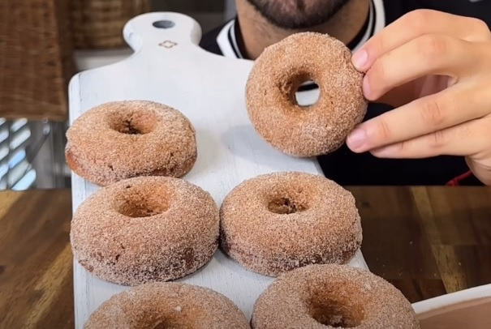

Cinnamon Sugar Doughnuts üç©
This is a recipe I found on Instagram a few months ago. It's a yummy treat that I always find myself craving, and I'm sure you will too.
Ingredients for this recipe:
- 40g oat flour
- 1.5 tsp baking powder
- 1 tsp cocoa powder
- 15g natural sweetener
- 1/2 tsp ground nutmeg
- 1 tsp vanilla extract
- 1 tsp ground cinnamon
- 100g Greek yogurt
- 1 egg
Directions for this recipe:
- Preheat oven to 350 degrees Fahrenheit.
- In a large bowl, combine the dry ingredients (oat flour, baking powder, cocoa powder, salt, cinnamon, sweetener, and nutmeg) and mix until evenly dispersed.
- Next, add in the wet ingredients (yogurt, vanilla extract, and egg) and mix until fully blended with the dry ingredients.
- Grab a doughnut baking sheet and pour the mixture about 2/3 of the way up each mold.
- Bake for 15 minutes.
- Take out and cool for 10 minutes.
- In a small bowl, combine any amount of cinnamon and sweetener.
- Take the doughnuts out of their molds and roll the top in the bowl of cinnamon sugar, then place on a plate to finish cooling.
- Serve or store in the fridge.
This recipe is one of my favorites because not only are the doughnuts yummy, but they're about a fourth the serving of a regular doughnut. Meaning you can eat a plateful in one sitting and not feel as bloated or guilty. I've shared these doughnuts with my family, and they all agree they're delicious.
One of my favorite places to search for recipes is Simply Recipes website! They have loads of delicious healthy recipes I love.

I hope you enjoy these doughnuts as much as I do. Good luck baking!